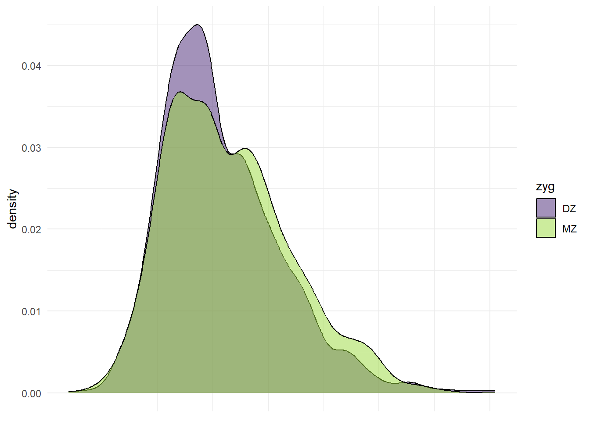

4 Wide Form Data Visualization
4.1 1. Univariate Distributions
4.1.1 Histograms
Histograms are a great way to visualize the distribution of a single variable. Here, we will create histograms for the weight of twin 1 and twin 2.
4.1.2 Density Plots
Density Plot of Weight for Twin 1
ggplot(df_wide, aes(x = wt1, fill = zyg)) +
geom_density(alpha = 0.5) +
labs(x = "Weight of Twin 1", y = "Density", title = "Density Plot of Weight for Twin 1 by Zygosity") +
scale_fill_viridis_d(option = "viridis", begin = 0.1, end = 0.85) +
theme_minimal()Density Plot of Weight for Twin 2
4.1.3 Box Plots
Box Plot of Weight for Twin 1
ggplot(df_wide, aes(x = zyg, y = wt1, fill = zyg)) +
geom_boxplot() +
labs(x = "Zygosity", y = "Weight of Twin 1", title = "Box Plot of Weight for Twin 1 by Zygosity") +
scale_fill_viridis_d(option = "viridis", begin = 0.1, end = 0.85) +
theme_minimal()Box Plot of Weight for Twin 2
ggplot(df_wide, aes(x = zyg, y = wt2, fill = zyg)) +
geom_boxplot() +
labs(x = "Zygosity", y = "Weight of Twin 2", title = "Box Plot of Weight for Twin 2 by Zygosity") +
scale_fill_viridis_d(option = "viridis", begin = 0.1, end = 0.85) +
theme_minimal()Paired Boxplot of Weights by Zygosity
4.2 2. Bivariate Distributions
4.2.1 Scatter
# Basic Scatter Plot of weight of Twin 1 vs. weight of Twin 2
p <- ggplot(df_wide, aes(x=wt1, y=wt2, color=zyg)) +
geom_point(alpha=.5) +
labs(x = "Weight of Twin 1",
y = "Weight of Twin 2",
title = "Scatterplot of weight by Zygosity") +
scale_color_viridis_d(option = "viridis",
begin = 0.1,end=.85) +
theme_minimal()
p
Adding a regression line to the scatter plot.
## `geom_smooth()` using formula = 'y ~ x'
4.2.2 Marginal Density Plots
library(ggplot2)
library(ggExtra)
# Create marginal density plots for x and y axes
p_x <- ggplot(df_wide, aes(x = wt1, fill = zyg)) +
geom_density(alpha = 0.5) +
theme_minimal() +
scale_fill_viridis_d(option = "viridis", begin = 0.1, end = 0.85) +
theme(axis.title.x = element_blank(),
axis.text.x = element_blank(),
axis.ticks.x = element_blank())
p_x
p_y <- ggplot(df_wide, aes(x = wt2, fill = zyg)) +
geom_density(alpha = 0.5) +
scale_fill_viridis_d(option = "viridis", begin = 0.1, end = 0.85) +
coord_flip() +
theme_minimal() +
theme(axis.title.y = element_blank(),
axis.text.y = element_blank(),
axis.ticks.y = element_blank())
p_y
4.3 3. Correlation Analysis
4.3.1 Correlation Matrix and Correlogram
library(ggcorrplot)
# select only the variables of interest
df_cor <- df_wide %>% select(wt1, wt2, ht1, ht2)
# Compute correlation matrix
corr <- cor(df_cor ,use="pairwise.complete") %>% round(2)
ggcorrplot(corr, type = "lower", lab = TRUE,
lab_size = 3,
method = "circle",
colors = c("tomato2", "white", "springgreen3"),
title = "Correlation Matrix of Twin Data",
ggtheme = theme_bw)
4.3.1.1 By zygosity
Making a correlation matrix for each zygosity group is a tad more complicated, but still doable. We can use group_by() and summarise() from dplyr to compute the correlation matrix for each group. Then we can arrange the correlations in a long format and plot them using ggplot2. I’ve placed the MZ twins in the lower triangle and the DZ twins in the upper triangle.
# Load necessary libraries
library(dplyr) # for data manipulation
library(purrr) # for functional programming tools
corr_zyg <- df_wide %>%
# Group the data by 'zyg'
group_by(zyg) %>%
# Compute the correlation matrix for each group
summarise(
cor_wt1_wt2 = cor(wt1, wt2, use = "pairwise.complete"),
cor_wt1_ht1 = cor(wt1, ht1, use = "pairwise.complete"),
cor_wt1_ht2 = cor(wt1, ht2, use = "pairwise.complete"),
cor_wt2_ht1 = cor(wt2, ht1, use = "pairwise.complete"),
cor_wt2_ht2 = cor(wt2, ht2, use = "pairwise.complete"),
cor_ht1_ht2 = cor(ht1, ht2, use = "pairwise.complete")
) %>%
pivot_longer(-zyg, names_to = "pairs", values_to = "correlation") %>%
unite("pairs", pairs, zyg, sep = "_") %>%
pivot_wider(names_from = pairs, values_from = correlation)
# Display the results
combined_matrix <- matrix(1, nrow = 4, ncol = 4)
rownames(combined_matrix) <- colnames(combined_matrix) <- c("wt1", "wt2", "ht1", "ht2")
# Fill the lower triangle with MZ correlations
combined_matrix[lower.tri(combined_matrix)] <- c(
corr_zyg$cor_wt1_wt2_MZ, corr_zyg$cor_wt1_ht1_MZ, corr_zyg$cor_wt1_ht2_MZ,
corr_zyg$cor_wt2_ht1_MZ, corr_zyg$cor_wt2_ht2_MZ,
corr_zyg$cor_ht1_ht2_MZ
)
# Fill the upper triangle with DZ correlations
combined_matrix[upper.tri(combined_matrix)] <- c(
corr_zyg$cor_wt1_wt2_DZ, corr_zyg$cor_wt1_ht1_DZ, corr_zyg$cor_wt1_ht2_DZ,
corr_zyg$cor_wt2_ht1_DZ, corr_zyg$cor_wt2_ht2_DZ,
corr_zyg$cor_ht1_ht2_DZ
)
# Plot the correlation matrix
ggcorrplot(combined_matrix, show.diag = TRUE, lab = TRUE,
lab_size = 3, method = "circle",
colors = c("tomato2", "white", "springgreen3"),
title = "Correlation Matrix of Twin Data by Zygosity",
# subtitle = "MZ correlations in the lower triangle, DZ correlations in the upper triangle",
ggtheme = theme_bw) + labs(caption = "MZ correlations in the lower triangle,\nDZ correlations in the upper triangle")